Aces And Eights™
Aces And Eights™
栽培方法
青パパイヤ本州栽培の基本は…
- 春植え・秋収穫の1年1作で行います
- 植付け後生育に4か月、春から夏に一気に生育させ、夏の終わりから冬が来る直前まで収穫が続きます。
- 日当たりが良い肥沃な土壌
- 潅水設備があり排水が良い（地下水位の高い場所は苦手です）
- 植え付け時の地温確保（スムーズな活着）
- 施肥（吸肥力が高い植物です、肥料がとても重要！）
- 潅水（乾燥ストレスを与えない、肥料吸収を高める）
家庭菜園・露地栽培
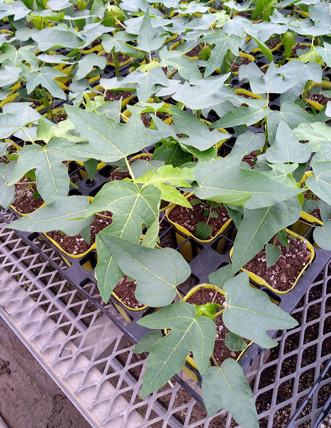
【露地・地植え】
家庭菜園における露地栽培で最も気を付けるべき点は、植え付け時期の寒さ対策です！
ホームセンターや園芸店などで苗を購入する場合は遅霜の心配のない4月末～5月中旬(中間地)が良いでしょう。苗キャップやアンドンなどの防寒対策を必ず行います。
購入から植付けまで時間を置く場合は、日の当たる室内で管理し、寒さに当てないように注意します。液肥を与えるのもプラスになります。
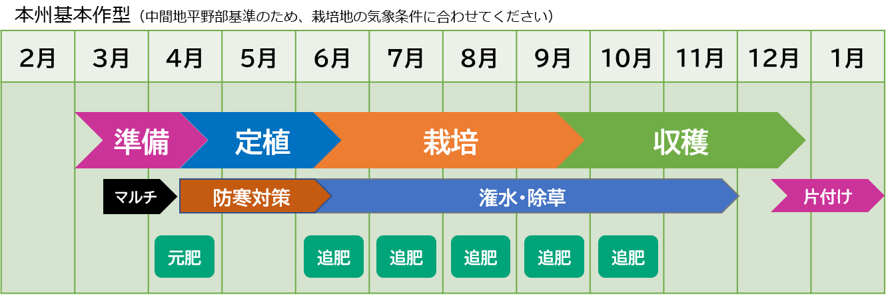
【植付準備】
- 1株あたりのスペース：パパイヤは最大2mの高さに育ちます。1株当たり栽培面積の目安は最低1坪、2.5ｍｘ2.0ｍが理想とされています。(隣接する株と葉が当たらない距離）
- 土づくり：植え付け前の準備とし、地面を深さ30㎝程度耕し、市販の野菜用緩効性肥料を施しておきます
- 畝(うね)づくりは基本不要：排水の悪い土壌や地下水位の高い土地では高さ20㎝、幅90㎝程度の畝を立てます
植え付けの2~3週間前に黒マルチを張ります。
マルチを張ることで、外気温が5℃以下の春先でも土中温度を20℃以上に保つことが可能となり、苗の活着が良くなります。
土中水分の温度は徐々に上がっていくため、植え付け直前にマルチを張っても意味がありません。
【植え付け】
- 遅霜の心配がない4月末から6月上旬に苗を植え付けます。購入した苗は植え付け前に液肥を施します（市販の野菜用液肥など）
- 植付けの際は根を切らない様植え付けます。
春先は夜温が低く、冷たい雨に当たることも良くあります。
植え付け時には苗キャップなどを用いて苗を寒さから守ります。
【栽培】
- 生育速度：4月末ごろ苗を植付けた場合、初めの1か月間はあまり変化が無いと感じるかもしれません。6月の平均気温が25℃を超えてくる頃には、目に見えて生育スピードが加速します。
- 肥料：毎月1回は必ず肥料を与えます。市販の野菜用肥料を1株当たり100g程度（有機配合肥料の場合）株元ではなく展開している葉の外周直下に与えます(マルチを張っている場合は外す)
- 水やり：肥料を吸収するためには水も必要です。木が大きくなると葉の枚数も増えるため、水分の蒸散量も多くなります。パパイヤの葉は肉厚で硬いため、水分が切れてもナスやカボチャのようにしおれることが少ないため、知らないうちに乾燥状態に陥ることがあります。高温期はマメな水やりと、敷き藁などで乾燥防止に努めます。
市販の果菜類用固形(ペレット)肥料が扱いやすいでしょう。
種類は有機でも化成でも配合でも、成分はN8・P8・K8で構いません。
パパイヤは肥料をやればやるほど成長し、沢山の花を咲かせます、同時に果実の肥大を維持するためにさらに多くの栄養素を必要とします。
★1株で1シーズン1.8㎏程度が必要となります(窒素量8%の場合）
【収穫】
- 収穫のタイミング：青パパイヤは外観から果実の成熟具合を判別することが難しいため、収穫はおおむね開花後の日数及びサイズで判断します。若採りすると青臭さが強く、遅く採ると甘みが強い果実になります。地面に近い最初に着果した果実から順に収穫します。
- 着果負担による落果：収穫しないまま長期間木に着けた場合、上部の花が落花することがあります。この場合は着果負担を軽減するため、下部の果実を収穫または間引き収穫しバランスを保ちます。
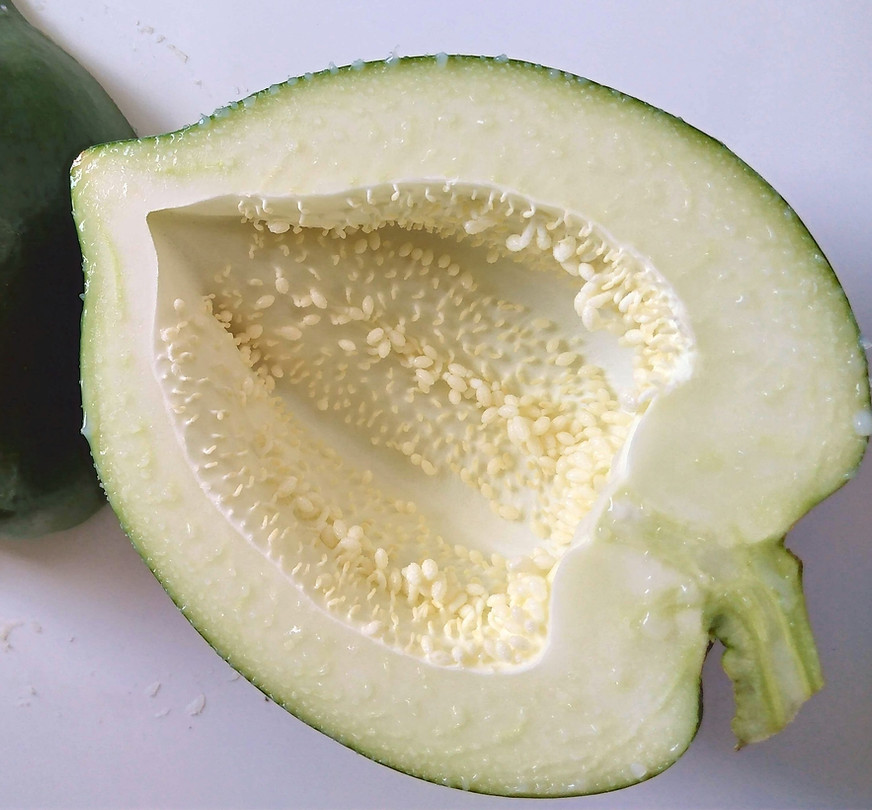
【初収穫のタイミング】
見た目でそれなりのサイズのものがあれば収穫してみましょう。4月中旬定植の株から、9月中旬に収穫した第1果（750g）。開花から約60日（およそ積算1,700℃）。画像は雌の種無し果実(単為結果)。
栽培を継続すればまだ大きくなります。やや未熟のため青臭さはありますが、食べるには何の問題もありません。生食の場合はスライスして水にさらしアク抜きします。
果実熟期を積算温度から判別する（積算温度は1日の平均気温ｘ日数）。スイカのように外観から内部の熟期が判別できない作物は、受粉からおよその積算温度を目安とし収穫する方法を用います。
青パパイヤもその方法を用いて収穫体系を作ることが可能と考えられます。しかしながら人工交配のスイカと違い、青パパイヤの場合は自然交配、しかも雌花は単為結果するため、受粉日を確認することは困難です。あくまでも目安にすぎませんが、青パパイヤ栽培の参考にしてください。(積算温度については、収穫時期で栽培日数が大きく変わることから、栽培地での観察試験が必要です）
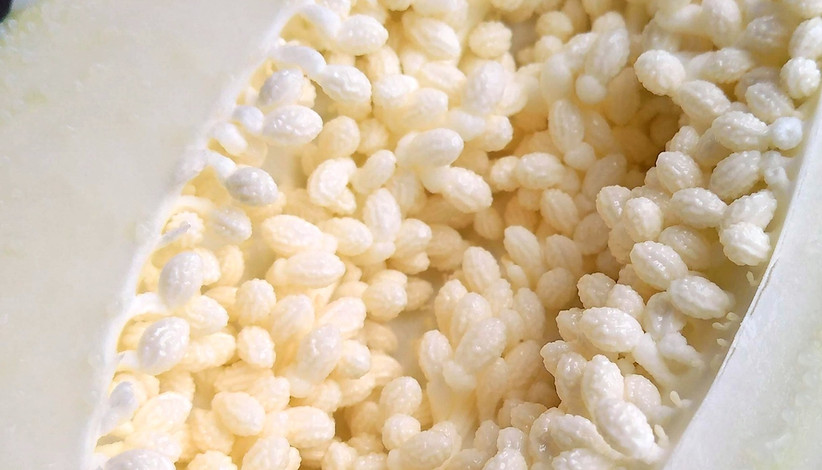
画像の果実は種が出来上がっている状態。このステージまで来ると青臭さが少なく、甘みが感じられるレベルになります。果実の硬さもわずかに柔らかくなります。10月中旬収穫、開花からおよそ80日前後（およそ積算1,850℃）
コンテナ栽培
【コンテナ栽培】
青パパイヤをコンテナで育てる場合、木の大きさ・果実の収穫量は鉢の大きさに比例します。容器の最低サイズは、直径30㎝ｘ高さ40㎝(土容量25~30リットル)程度です。
このサイズで木の高さは最終180㎝前後、300~500gの果実が3~5個程度収穫可能です。野菜として本格的な収穫は見込めませんが、実のなる観葉植物として成長を楽しめます。それなりの収穫量を得るには直径50㎝以上の大型果樹用コンテナを利用します。

【植え付け】
- 遅霜の心配が無い4月末～6月上旬に苗を植え付けます。
- 植え付け前に苗に液肥を与えます。
- 培養土には市販の野菜用緩効性肥料を施しておきます。
- 低温に当てない様、夜間は室内に取り込んでも構いません。
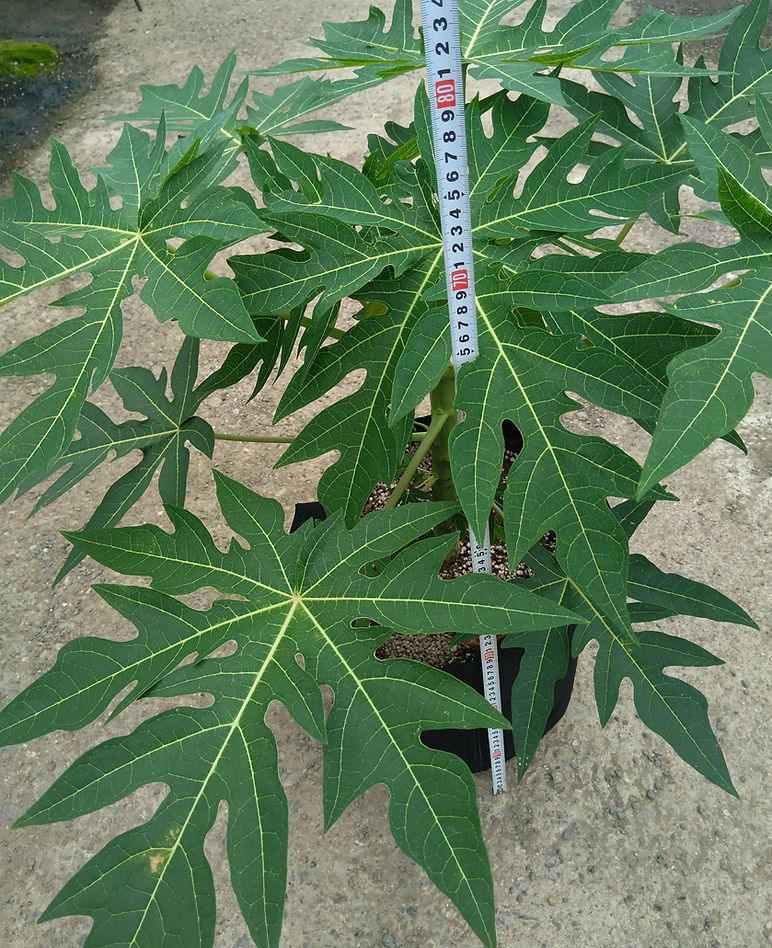
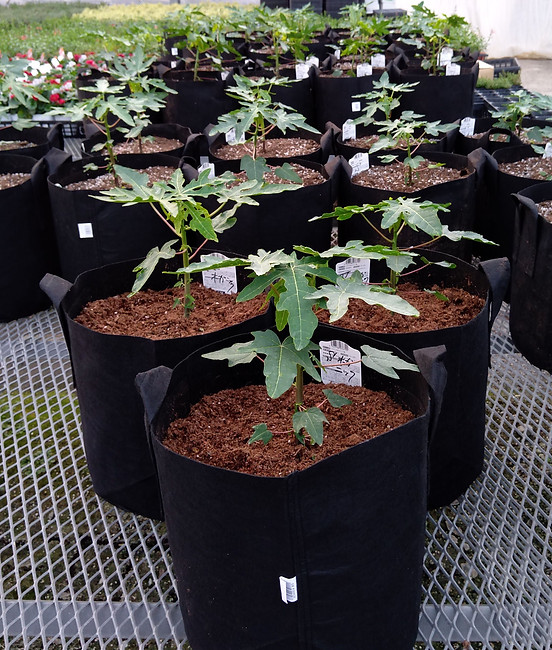
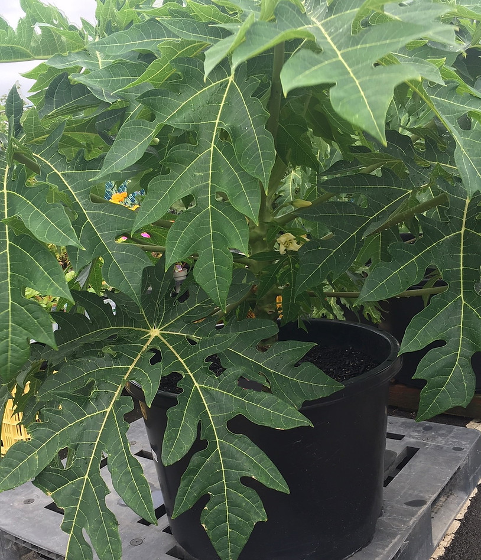
【肥料の与え方】
- 根の量が制限されるコンテナ栽培では、いかに肥料を絶え間なく供給するか？が栽培の大きなポイントとなります。植え付けに使う培養土が「元肥入り」でも、必ず別途元肥を施しておきます。
- 少量の肥料を高頻度で与えることが成功のカギ、そのため、固形肥料を20日に1度、並行して野菜用液肥を7日～10日に一度与えます。
- コンテナ栽培では乾燥状態も起きやすいため、真夏の水やりは欠かせません。パパイヤの葉は厚みがあり硬いため、萎れ始めが見た目では分かりにくいので注意が必要。完全に萎れてからでは手遅れになることもあります。
【越冬について】
- 12月に入り葉が枯れだしたら、幹だけを残して室内で冬越させることで、翌年も楽しむことが出来ます。ただし冬から春にかけて加温しない場合、開花時期や収穫時期は新たに植え直すのとほぼ変わらなくなります。
栄養状態は葉の観察で判断できます。
下葉が黄色く変色している場合は水不足による乾燥ストレス。
生長点付近の葉色が極薄い緑の場合や、幹が先に行くほど細く間延びする場合などは日照量が不足しています。
葉の付け根から出る新芽(腋芽)が成長しないまま黄色くなり落ちる場合も肥料が不足しているサインです。
【露地植え（貸農園）】
青パパイヤを露地植えする場合、1株あたりのスペースは最低1ｘ1m(理想は2.5ｘ2.5m）これは地上部の葉が展開する幅以上に地面の下で根が浅く広く伸びるため、広くとることで株の生長に余裕が生まれます。スペースに余裕がある露地栽培については、ページ下部の営利栽培を参考にしてください。
1株あたりの植える面積が制限される場合は、コンテナ栽培同様に肥料を絶え間なく与えることで成長を止めることなく栽培が可能です。
※画像は1平米に満たない面積で、1本のみの栽培ですが、月1回の置き肥と週1回の液肥を切らすことなく継続することで、側枝が2本成長しています。収穫量は30個(20kg強)を得ています。
定植：5月下旬・撮影日：10月13日・栽培地：愛知県・品種：フルーツタワー
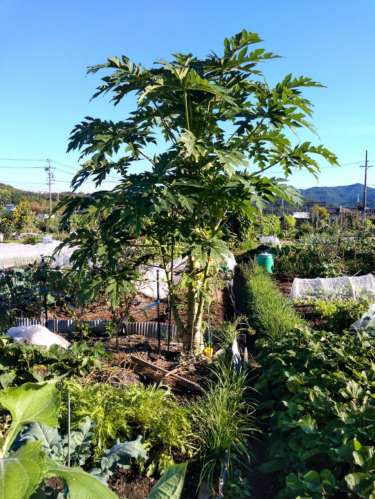
多くの貸農園では木陰を作る果樹や樹木の栽培を禁止しています。
パパイヤは草木に分類されますが、大型植物のため隣接の作物に木陰を作ってしまいます。栽培の際は農園貸主や近隣の方への配慮が必要となります、了解の上栽培してください。
【珍しい植物なので…】
近隣から「これは何？」と質問攻めになることも…そこからコミュニケーションが活発になり仲間が増えるのもこの植物の魅力です。
営利栽培向け基本作型
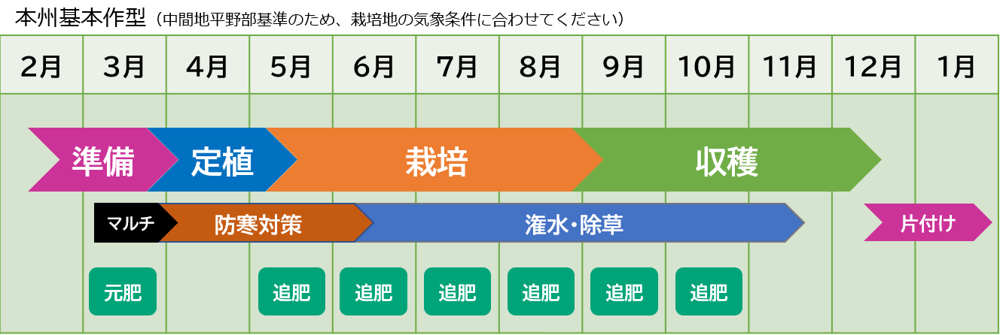
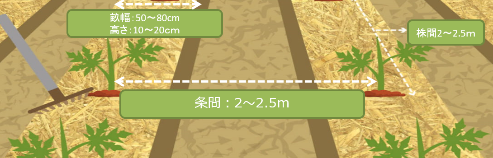
パパイヤは熱帯植物のため13℃を下回ると休眠状態に陥ります。
定植の2~3週間前にマルチを張ることで20℃に近い地温が確保可能です、定植後の活着がスムーズで、その後の生育も安定するためおすすめです。
また夜温が安定し遅霜の心配が無くなるまで、定植後も苗キャップなどで防寒に努めます。（葉焼けを防ぐため空間の広いキャップを使用する）
画像はトンネル支柱と有孔トンネルフィルムを利用した防寒の例。4月初旬定植から夜温が安定する5月下旬まで外さない。簡単ですが確実な方法です。

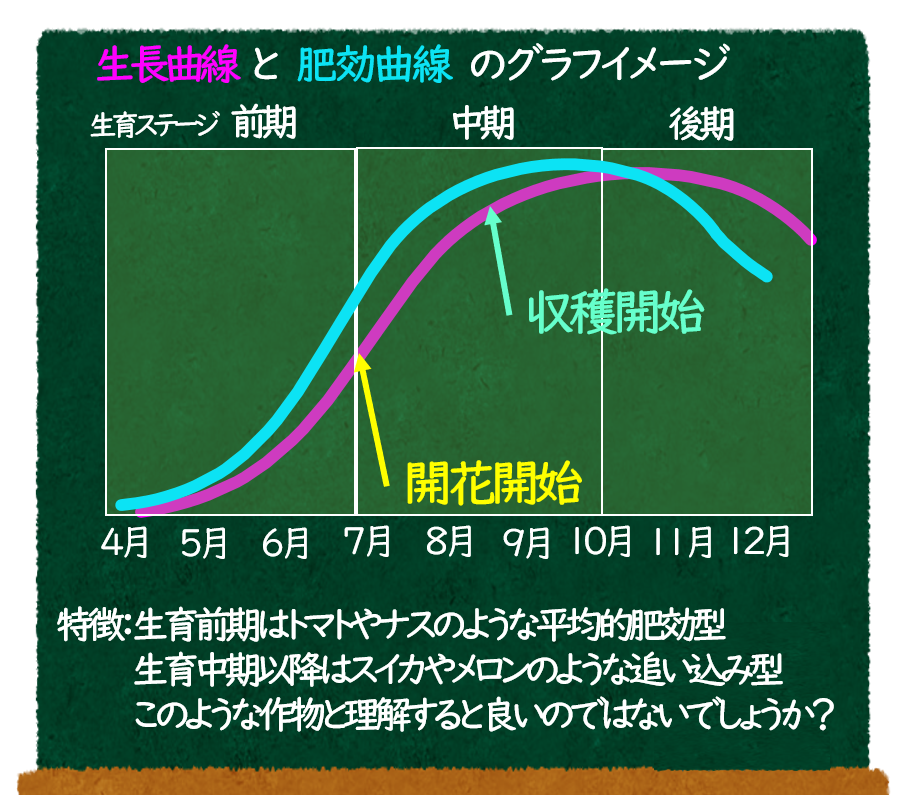
【基本施肥量】 窒素量の目安は最低25㎏(成分)/10a (元肥3：追肥7)
- 元肥：定植前に緩効性肥料を全面に施肥します。(有機・化成・または混合）畝を立てマルチを張る場合は緩効性肥料を畝の中心に割り入れます。
- 追肥：4月定植の場合、平均気温が20℃を上回る6月に入ると急激に成長し始めます。1回目の追肥はこのタイミングで行います。追肥は株元ではなく株回り、葉の外周直下に施します。数か所に穴肥もしくはバラ撒きます。
【施肥設計一例（慣行)】
- 元肥：N1.0：P2.0：K1.5
- 追肥：N1.0：P0.5：K2.0：Ca0.8＋Mｇ
パパイヤもトマトと同じように栄養生長と生殖生長を同時進行で行う植物のため肥料吸収パターンは連続吸収型の植物と考えられますが、パパイヤは果実の重量比率が高く、果実肥大に多くのカリウムを必要とします。
よって上記モデルでは生育前半は植物体を作る為の山形とし、着果タイミング以降は谷型とすることで果実肥大の損失を補う設計としています。（このモデルではECがやや高くカリウム流亡が起きやすい環境の為右肩上がりの設計としています）
本施肥設計はあくまで目安の一例です。土壌条件により肥効は大きく変わる為、農協による土壌診断など、データや専門家の意見を考慮し決定してください。
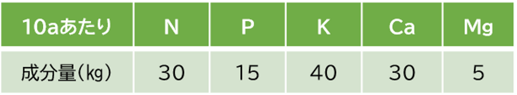
青パパイヤ栽培に最適な肥料とは？
栽培者によって肥料の選び方は様々で、高度化成のみや有機配合など。青パパイヤは薬剤散布の必要が少ないため、完全有機栽培を実践している農家もたくさんいます。収量性だけを比較すると化成肥料を用いたほうが有機栽培を上回ります。
【元肥ポイント】定植から生育初期は温度帯が低い為、成長速度はアイドリング状態といえます、この時期は最低限の施肥量で問題ありません。(マルチによる地温確保・キャップによる夜温確保が前提)
【追肥ポイント】栽培地の平均最低気温が14℃を上回ると生育速度が全開に入ります。生育と共に開花準備に入るこのタイミングから意識的に追肥します。窒素施用によりカルシウムが減少することが分かっていますので、葉面散布による追肥も効果的です。
施肥量・潅水量(降雨量)と植物の生長バランスを見ながら過剰にならない様施肥します。
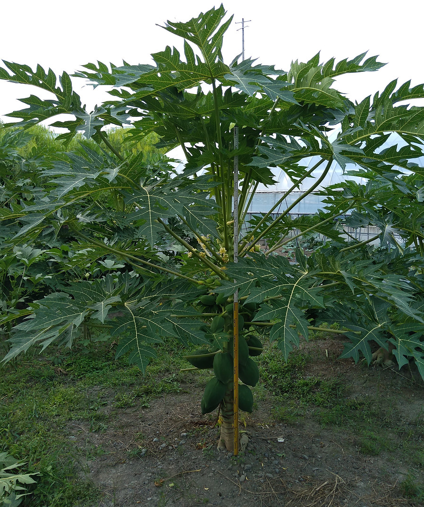
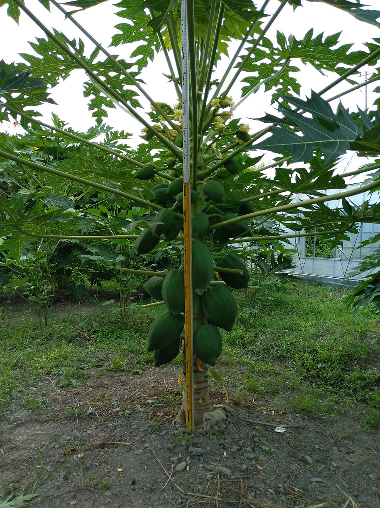
【株間2.5ｍ条間2ｍの必要性】
根は浅く広く張る（葉の外周以上）
給肥力が高く、適正温度帯での成長速度が驚くほど高いパパイヤ、春植え本州栽培では定植から4か月で8割程度のサイズとなり、5か月で完成サイズとなります。
根・葉も広く張る為、隣接する株の葉が重ならない距離が理想です。
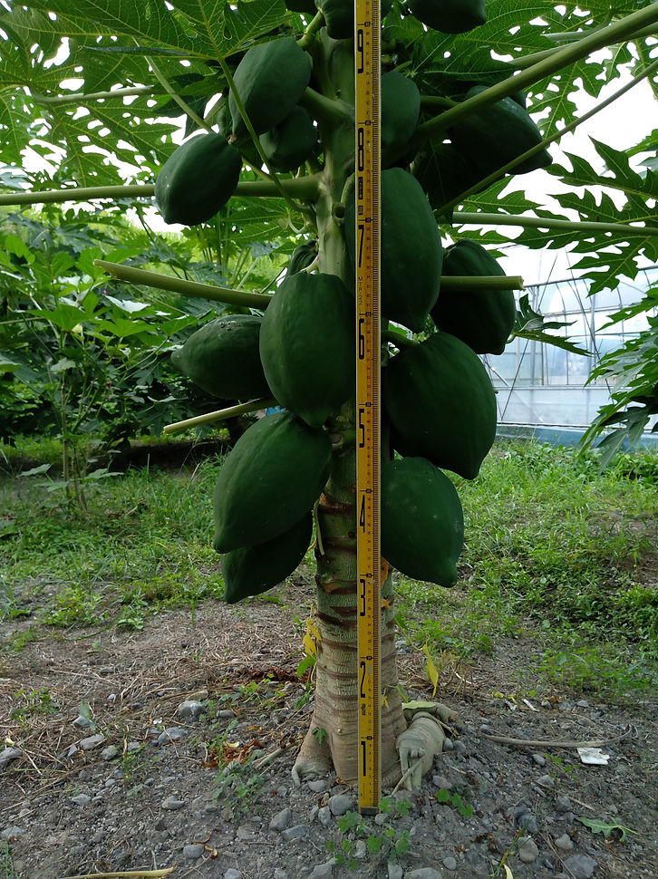
【標準サイズ】
- 品種：フルーツタワー
- 定植：4月29日（10.5㎝ポット苗）
- 撮影日：9月29日（静岡県）
- 樹高：210㎝ ／ 葉張：240㎝ ／ 幹径：18.7㎝
- 着果位置：最下部40㎝(本葉13節)
- 着果個数：40個以上（※下段より10個はすべて1㎏以上）
- 生長点位置：150㎝
2020年の栽培では、生育前半の長雨・曇天の影響が大きく、平年より約3週間程度の遅れとなりました。
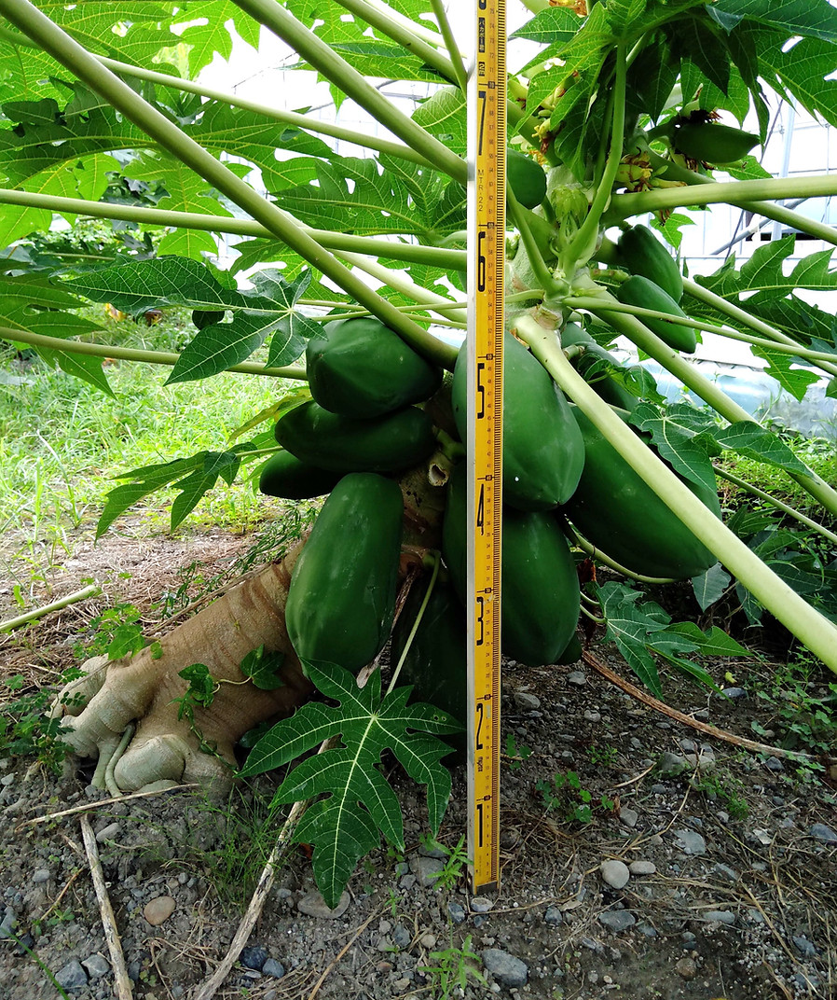
【風の影響を回避するために】
青パパイヤ栽培では台風や突風の被害に遭うことがしばしばあります。葉の面積が大きく風の抵抗を受けやすく、幹は中空で各節ごとに竹のような節を持つ構造のため、強風ではしなることなく折れてしまいます。
台風などが飛来する前には、果実はすべて収穫し、生長点付近より下の葉を取り去り、風の抵抗を軽減する措置を取ります。
定植後のナナメ誘引も地上高を低く抑えることが可能な栽培です。
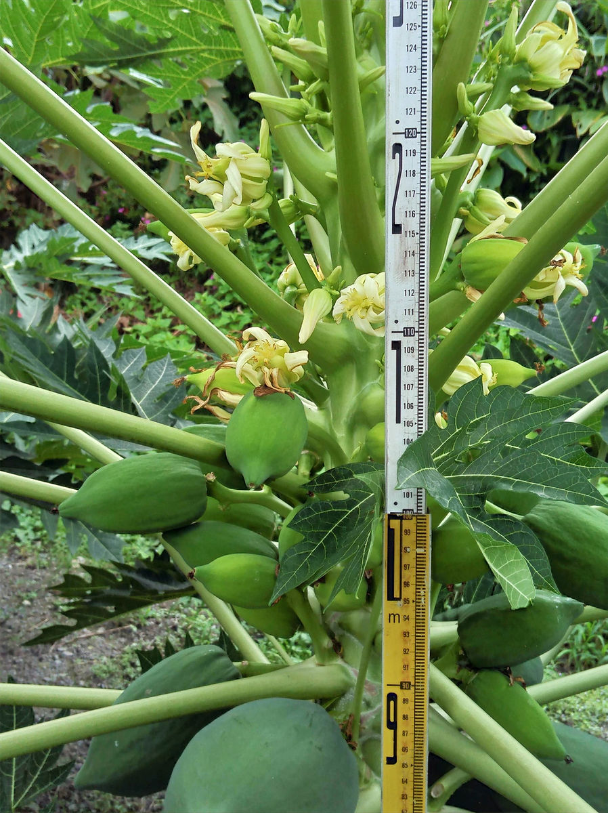
ナナメ定植は、定植後苗サイズが30～50㎝になった頃、ショベルを用いて周辺の土ごと起こし寝かせます。
この栽培ではその後誘引はしていませんが、着果位置は1m以下、生長点位置も130㎝と非常にコンパクトに栽培することが可能です。
苗ごと土起こしした後に継続的に誘引することで、完全に地面と平行に木を仕立てる事も可能ですが、誘引の手間と、低すぎる着果位置で収穫作業にかえって手間がかかる為、本例ではあえて途中で誘引をやめています。
ナナメ誘引は風対策としてはある程度有効と考えられます。
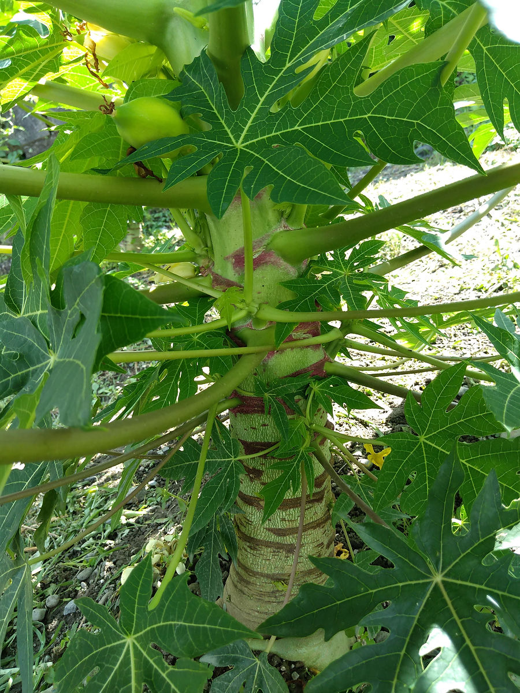
腋芽(えきが：葉の付け根の芽)を観察することでその個体の栄養状態の目安に。
- 各節の腋芽が発達しており、葉が数枚展開し、生長点が確認できる。
このような状態は生育適温下で肥料が確実に効いている証拠で、発達した腋芽からは側枝が成長しやがて開花・着果もします。多収栽培を目指す場合はこの状態を維持することが必須となります。
- 左の画像は定植後3か月(7月末)の画像。
- 定植：4月29日（10.5㎝ポット苗）
- 樹高：140㎝ ／ 幹径：20㎝
- 撮影場所：静岡県
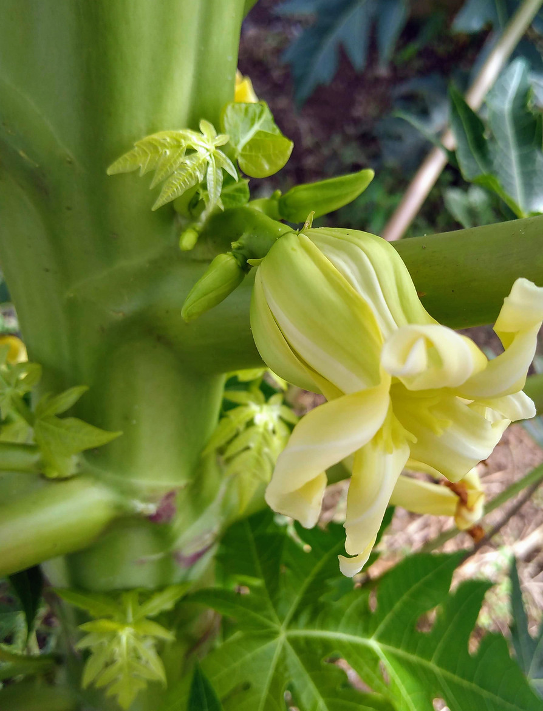
花柄(かへい：花を支える茎)の状態を観察することで栄養状態の確認が可能です。
- 右の画像は雌花を撮影したものです。葉腋から花柄がやや伸びた状態で、つぼみが複数付いています。（花数には品種間差および性別差があります)
- 生育適温下で栄養状態が良い個体では1節あたり2～3果着果させることが可能です。
- 左の画像は定植後80日(7月初旬)の画像。
- 定植：4月20日（10.5㎝ポット苗）
- 樹高：120㎝ ／ 幹回り：18㎝
- 撮影場所：静岡県
上記の判別法はあくまで施肥効果の確認目安にすぎません。必ずしも上記のような状態でなくとも収穫は可能です。多肥栽培により異常が発生した場合は速やかに葉を除去しバランスを整えます。
前出の通り青パパイヤ栽培において目立った病害はあまり発生せず、害虫による食害は皆無といってよいほど見掛けないことから、農薬に関しては予防防除よりも対症療法的な運用となります。しかしながら環境によっては、隣接する植物から飛来する場合や、乾燥や過湿続きにより発生する病気などには必要に応じて対処します。
- 生育初期：近隣植物から飛来するスリップス・アブラムシ
- 生育中期：乾燥続きによるハダニ・うどん粉
- 生育後期：過湿曇天続きによるサビ病
薬剤散布の必要が生じた場合、使用農薬は「パパイヤ」もしくは「その他果樹類」に登録のある薬剤を使用してください。
★パパイヤ（青パパイヤ：未熟果利用含む）は作物分類上「果樹類」となります。
※個別に農薬散布に関するお問い合わせは対応できかねます。管轄の農協・普及所にご相談ください
【栽培後期】
9月以降、開花数・着果数が増えるにつれ追肥をしているにもかかわらず、生育不良や葉の黄化が始まることがあります。主な要因はホウ素・亜鉛・硫黄などの微量要素欠乏が疑われます。
古葉（葉年齢が経過した葉）以外の葉が黄化する場合や、葉脈に沿ってモザイク状に黄化する。葉脈が黄化する。などの症状がみられた場合は、微量要素材の葉面散布を行うことで改善が見込めます。
【ハウス栽培】内張り・カーテンで無加温ハウス越冬栽培(東海圏）
- 栽培作型は露地と同じく春植えとした場合、1年目終了時に膝付近の高さで木を切断。
- 2年目の春、切断面付近から新たな芽が立ち上がり生長する。
- 経年劣化による収量不足を補うため、3年程度での更新が望ましい。
- 加温設備がある場合は継続して収穫が可能となるが、ハウス栽培では日照量不足から節間伸長を起こしやすく、ハウス天井に届いてしまい作業性が悪化するため更新は必要。
- 台風など、強風による倒伏の心配が無い。
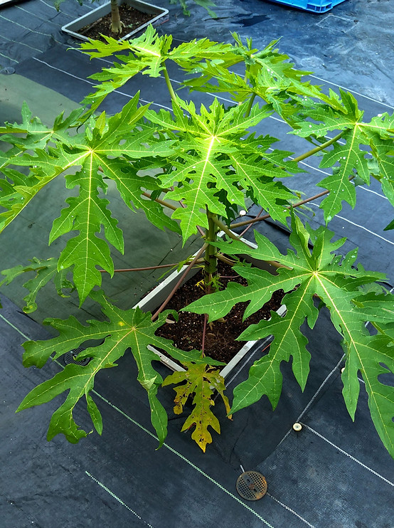
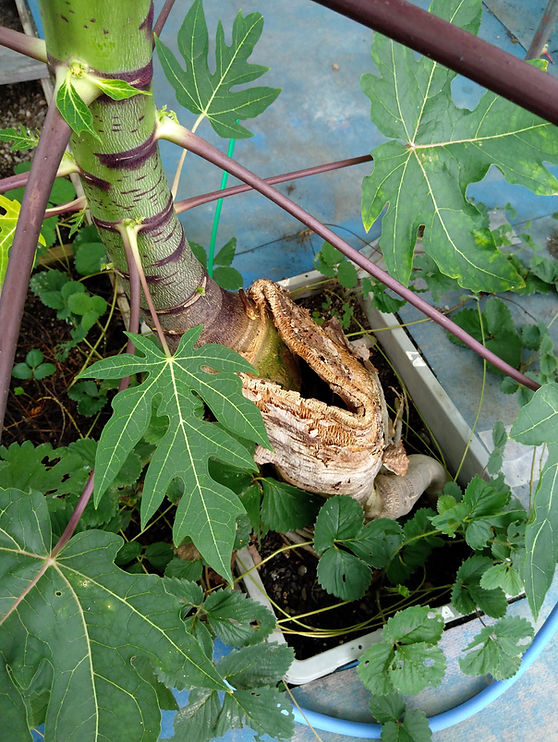
【コンテナ埋設型栽培】
コンテナに定植した苗を埋設することで、複数年収穫したのちの撤去作業が簡単。コンテナには1㎝程度の穴が数か所あるのみ。潅水・施肥はスパイダーを用いて溶液を流す方法。無加温ハウスのため収穫は年1回となる。スタートが早い為、株当たり収穫量は露地をやや上回る。
【目標収穫量】
本州栽培青パパイヤにおける春植え秋収穫作型での標準的な収穫量は…10aあたり：2,500㎏（植栽160本/1株平均15.7㎏・収穫個数30/平均重量520g）
出荷基準：S-500g未満 M-500g～750ｇ未満 L-750g～1㎏未満 LL-1㎏以上を出荷基準とした場合、1株あたり平均的な収穫割合は以下となる。イメージは1番花着果節位から上方向に低段10節、中段10節、上段10節
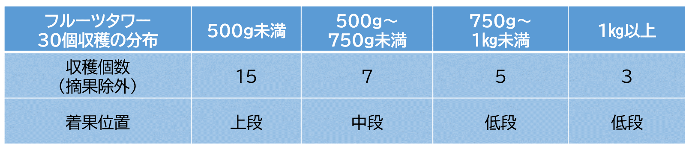
【多収栽培】
本州露地栽培でも10aあたり5トン弱の収穫を得ることが可能。1株当たり30㎏の収穫は定植時マルチによる地温管理と、10a/窒素成分量40㎏の施肥設計、適切な収穫・摘果により実現可能です。
【収穫コントロール】
4月定植では6月後半から開花スタートとなり、9月には低段の多くが1㎏を超えてくる。樹勢のバランスが取れている施肥管理であれば、9月開花の上段10節を11月収穫(400～500g程度)することが可能(短期間で積算温度が取れる8月・9月開花は花数も多い)。
1番果以降低段の10節を600g程度とあまり大きくしないで8月収穫することで、中段以降の生育バランス(肥大)を促すことも、目的とする重量に揃えて出荷する場合には有効です。
ただし、適切な肥培・潅水管理が出来ている場合、8月最適正温度下での着果負担はあまり見られない為、品種にもよるが低段を1㎏程度まで太らせること自体はさほど問題ありません。
【落花】
開花しないでつぼみのまま落ちる、開花後に落ちる。生育初期には肥料が不十分で樹勢が貧弱な場合、つぼみが成長しないまま茶色く変色し落ちることがあります。この場合は肥培管理を修正することで木の生長と共に改善が可能。
- 6月末の生育初期1番花開花付近が落ちる場合：両性花の場合は花芽分化期に低温にあたり雌しべが退化、雄花化したことによるものと考えられる。一時的な現象のため、気温の回復と共に改善する。
- 7月開花後に花が落花する場合：梅雨の曇天による日照不足で植物体の栄養状態が悪く、徒長している場合によく見られる。生育は遅れるものの、天候の回復とともに持ち直すことが多い。
- 8月は高温による乾燥ストレスや、花粉稔性の低下など、両性花での落花が見受けられる。その場合は栽培後半の着果負担を招きかねない為、低段の収穫を行い、生長バランスを整える。
【落果】
果実が肥大する前（クルミ大）に落果する
- 極端な乾燥ストレスが加わると落果することがあります。
過去に生産を脅かすほどの猛威を振るった2大パパイヤウイルス病とは…
フルーツ生産を中心に中南米・東南アジアを中心にかつて猛威を振るった病気があります。現在は耐病性の高い品種の普及により、壊滅的な被害はありませんが、国内でも栽培が広がる中、知っておくべき知識です。
- パパイヤリングスポットウイルス（PRSV-P)：90年代ハワイやフィリピンのパパイヤ産業に壊滅的な打撃を与えました。発症すると生育は止まり枯死する、果実は輪状の病斑で覆われ廃棄するほかない。この病気がきっかけとなり後述の遺伝子組み換え品種が開発されました。
- パパイヤ奇形葉モザイクウイルス (PLDMW)：発症するとPRSVとよく似た症状が出る。日本ではPRSVよりも多く発生。
いずれもアブラムシが媒介するウイルス病で、沖縄県や鹿児島県（奄美群島）で発生している。沖縄県産の苗を購入する場合は健全な苗を選ぶこと。
※個別に病気に関するお問い合わせは対応できかねます。管轄の農協・普及所にご相談ください
【PRSV抵抗性遺伝子組み換え品種】
パパイヤ産業を脅かしたPRSVに抵抗性を持たせるため、遺伝子組み換え品種が開発されました。組み換えパパイヤは数か国で開発されていますが、現在商業生産が確認されているのはハワイ産のみです。
- 1990年：ハワイのパパイヤ産業を壊滅に追いやったパパイヤリングスポットウイルスに抵抗性を持つ遺伝子組み換えパパイヤ(55-1系統)がハワイ大学により開発されます。
- 1997年：FDA（米国食品医薬品庁）による食品安全評価にて安全性確認。
- 1998年：ハワイにて商業栽培が開始
2003年にカナダで、2011年には日本でも食品としての安全確認が取れたため、ハワイ産の「レインボー」がフルーツとして輸入販売されています。（現在ハワイでは55-1系統：品種名「サンアップ」「レインボー」「ライエゴールド」が生産されています）
日本国内で上記のような遺伝子組み換え品種の栽培は一切行われていません。（種苗の輸入及び無許可での栽培は禁止されています）
世界のパパイヤ産地では、遺伝子組み換え品種の導入はあまり進んでおらず、むしろ既存の育種方法による耐病性品種が台湾・タイ・スペイン・中国・インドなどの種苗メーカーから次々と発表され主流となっています。
営利栽培向け メリットと準備
【露地栽培】 青パパイヤの営利栽培にはメリットが数多くあります。
- 病害・獣害がほぼ無いに等しく初期投資が不要！
- 栽培中の作業は施肥・潅水・除草程度、片付けも簡単！
- 珍しい作物のため地域で話題になりコミュニケーションが生まれる！
- 青果物の加工適正が高く六次化も容易（果実・葉の利用）
栽培地域の北限は北関東と言われてきましたが、東北で栽培されている農家もあります。生育温度帯の栽培期間が長ければその分収穫量は増えます。現在は青果流通量が少ないため「新しくて珍しい健康野菜」として直売所での販売品目として定着、利用者からも認知されつつあります。
大きいサイズは直売では売りにくいと思いがちですが、客層によって需要は異なります。
【栽培準備】10a当り植栽本数150～180本
- 日当たり、排水のよい肥沃な土壌が望ましい。要潅水設備。
- 事前に必要であれば石灰などを用いてpH矯正する（生育適正はpH6～8)
パパイヤは強酸性土壌では生育不良が顕著に出る。反面アルカリ土壌は得意と言われています。
- 畝たて：基本不要です、排水の悪い土壌や地下水位の高い土地では10㎝～20㎝程度の畝が必要。
- 株間：2.5m 条間：2m（理想は株間・条間共に2.5mで千鳥植え）
家庭菜園で育てるには？
次のページへ